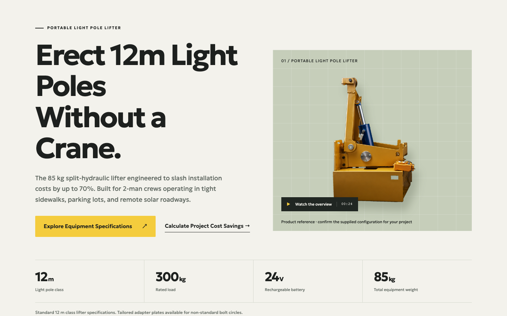
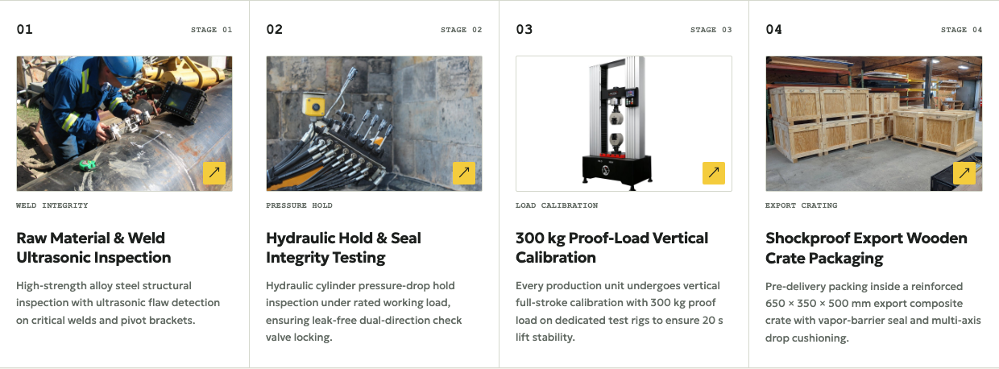
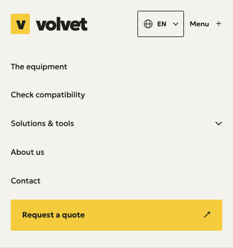

DESIGN SYSTEM / WORKING REFERENCE
机械类网站
设计规范与复用指南
以 volvet 当前本地代码为参考，面向设备制造、施工机械、液压装备与工业品网站。
精密工业参数驱动证据可查

设计系统用于复用视觉与交互方法。新网站应替换品牌、设备参数、图片、企业资料及商务条件。
来源基点 4fe60c7；纳入 2026-10-31 本地未提交的组件更新。具体来源文件摘要见 source-manifest.json。
01 / FOUNDATIONS
色彩与字体
暖米底板承载信息，深墨文字建立秩序，明黄只强调主要动作。
碳墨黑#1d201e正文、标题、数据
工业深黑#202622页脚、工具结果面板
灰绿辅助色#626a63说明、图注、标签
暖米底色#f3f2ec页面主背景
纯白#fff输入框、局部卡片
工业明黄#f4cc3d主要按钮、选中项
结构线#d5d8cd边框、参数表、网格
灰绿展台#c6ceba产品主视觉与图片底板
当前字阶
| 角色 | 字号 | 字重 / 行高 |
|---|
| 首页 H1 | clamp(40px, 5.7vw, 82px) | 650 / 1.08 |
| 页面 H1 | clamp(36px, 5vw, 64px) | 650 / 1.08 |
| 模块 H2 | clamp(30px, 3.6vw, 50px) | 650 / 1.08 |
| 卡片 H3 | 23px；组件按角色覆盖 | 650 / 通常 1.25 |
| 正文 / 导语 | 15px / 18px（手机 16px） | 400 / 1.65 与 1.7 |
| 工程编号 / 前导标签 | 12px 等宽 / 11px | 编号与类别，不替代正文 |
主字体 Geologica；工程数字和编号使用 Courier New。Geologica 本地文件为 Latin 子集；中泰文应检查字体与字距。以上为当前 CSS，不套用旧文档的统一行高。
02 / LAYOUT
容器、网格与留白
用统一的宽度、对齐和段落节奏连接组件。
产品身份 / 核心用途文案与行动
1.05 fr
52px 线网格 / 灰绿展台设备图
0.95 fr
参数 01参数 02参数 03参数 04
| 设计项 | 当前值 |
|---|
| 内容 / 页头最大宽 | 1240px / 1440px |
| 容器左右留白 | 48px → 30px（≤1050）→ 18px（≤760） |
| 模块上下留白 | 90px → 55px（≤760） |
| 通用双列间距 | 70px → 40px → 30px |
| 参数带 | 4 列 → 2×2；贯穿细线 |
| 页头最终规则 | 大屏左右 36px；≤1280px 折叠菜单 |
在 1440 / 820 / 390 / 320px 验收。1440 与 390 是验收视口，不是统一的 CSS 断点；各组件按实际内容切换布局。
03 / COMPONENTS
操作与数据的共同语言
微圆角、明确状态、工程参数与主次分明的操作。
主按钮：padding 17px 23px · 2px 圆角 · hover #ffdb59 / 上移 2px。
20 kW主轴功率 · 示例
±0.02加工精度 · 示例
380 V供电 · 示例
2.4 m²占地 · 示例
| 规则 | 实施要点 |
|---|
| 输入 | 最小高 48px，白底，常驻 label，错误文字 + aria-invalid |
| 规格与表格 | 数值和单位相邻；型号配置使用键值表 |
| 按钮高度 | 由字号、行高、padding 决定；当前不是固定 54px |
| 阴影与圆角 | 内容以线为主；主图、灯箱和下拉浮层可使用功能性阴影 |
| 焦点 | 全局 3px #947500，键盘操作可见 |
本页参数为组件样式示例，不代表任何设备的实际能力。
04 / PAGE ARCHITECTURE
让采购判断顺着页面发生
页面顺序由买家的任务决定，不把每个页面都做成同一张产品画册。
| 页面 | 推荐信息顺序 |
|---|
| 首页 | 产品与用途 → 参数 → 场景 → 结构价值 → 可信资料 → 下一步 |
| 产品页 | 身份与图库 → 规格 → 配置 → 选型 → 包装与交付 → 询价 |
| 应用页 | 工况限制 → 工作范围 → 设备适配 → 需要的资料 → 技术入口 |
| About | 实体与产品焦点 → 工厂 → 质检 → 支持 → 交付信息 |
| 工具页 | 输入依据 → 工具与结果 → 假设/公式 → 带入询盘 |
| 资料 / 询价 | 实际可用文件 / 必要联系信息 → 明确凭证与后续流程 |
三个阶段，三个可执行入口

- 了解：下载真实规格，不先索取大量信息。
- 评估：核对尺寸或图纸，说明需要补充什么。
- 采购：提交应用、数量和目的地，进入项目报价。
多机型网站应额外提供分类、筛选与机型比较。新项目的参数带必须换成该品类自己的四个关键指标。
05 / TOOLS & COMPARISON
工具应该给出下一步
双列工作台：左侧输入，右侧结果；手机按输入、结果、下一步纵向排列。

| 交互契约 | 可迁移规则 |
|---|
| 状态 | 区分空白、有效、补件、需审核与无效输入；不能只靠颜色 |
| 结果 | 使用当前输入；变化后清除旧结果；数字随语言格式化 |
| 计算依据 | 展示公式、单位与假设；ROI 同样展示负收益情况 |
| 行动 | 用户点击后带入当前语言询盘，保留可编辑备注 |
| 宽表 | 只让表格容器滚动，保持行列语义和整页不溢出 |
尺寸匹配属于选型准备，不等于实际作业批准。复用工具结构时必须替换计算公式与本品类判断范围。
06 / MEDIA & EVIDENCE
用设备与现场资料建立信任
图像负责解释结构、工况、工厂和检验；图注说明它能支持什么判断。

| 媒体角色 | 布局规则 |
|---|
| 透明底设备图 | contain，主体结构完整；可置于灰绿线网格展台 |
| 工厂与工况照片 | cover；通用图 3:2，画廊和质检常用 16:10 |
| 视频 | 16:9；明确控制与字幕；当前设备影片 preload=none |
| 图注与放大 | 11-12px 图注；图片放大入口通常 44px，支持 Escape 与焦点返回 |
| 证据模块 | 编号、清晰标题、图片与短说明；4 → 2 → 1 列 |
截图仅作设计参考。新项目应换入自己的设备、场景、工厂、资质和记录；产品图不能替代检测记录。
07 / RESPONSIVE & LANGUAGE
同一套组件，多种屏幕与语言
布局容纳文字增长；初始页面与交互后的提示必须使用同一语言。

| 宽度 | 当前规则 |
|---|
| ≤1280 | 导航折叠，语言入口保留 |
| ≤1050 | 容器收紧；部分网格 4→2 |
| ≤800 / ≤760 | 工具 / 主内容单列 |
| ≤600 / ≤480 | 表单与卡片进一步收紧 |
| 320px | 检查长标题、字段与按钮 |
- 覆盖正文、alt、aria-label、图注、错误、KPI 单位及 FAQ JSON-LD。
- 交互脚本读取本语言词典；不能依赖构建时正文翻译替脚本翻译。
- 子组件显式传 locale；下载、询价和语言切换保留当前页面主题。
- 中泰文检查字形与字距；不以固定高度裁切长标题。
- 键盘焦点、菜单状态、图片灯箱和 aria-live 可用；减少动画偏好生效。
本站实现 en / es / fr / pt / vi / th / id。缺译和模板占位符异常应阻断构建，不能默默返回英文。
08 / REUSE & HANDOFF
把方法带到下一台设备
复制设计秩序，替换品牌和产品事实。
| 可沿用 | 新项目必须调整 |
|---|
| 语义色、细线与留白 | 品牌色、Logo、字体与品牌语言 |
| 主图 + 参数的首屏逻辑 | 设备图片与该品类的四项参数 |
| 资料 / 选型 / 询价路径 | 实际资料文件、选型流程与询盘字段 |
| 工厂和质检的信息层级 | 真实工厂、检验记录、认证与资质 |
| 输入 / 结果 / 行动工具模式 | 公式、适用条件与工程判断范围 |
| 组件共享和语言词典契约 | 目标语种、文案与本地业务术语 |
开发交接包
DESIGN-SPEC.md完整规范、页面顺序、迁移建议与建站指令。
design-tokens.json实值、局部覆盖、断点与迁移建议。
mechanical-b2b-starter.css轻量基础样式，作为新项目起点。
source-manifest.json来源文件和实际摘要，支持追溯。
上线前检查
- 四种宽度无整页溢出；主要行动明确且实际可用。
- 长语言文本不裁切；工具状态和单位没有英文回退。
- 键盘焦点、错误提示、菜单、灯箱和减少动画可用。
- 项目参数、图片、资质和商务信息均已替换为本项目真实资料。
先看视觉手册，再把 Markdown、JSON 和 starter CSS 交给设计与开发。本站完整 CSS 快照仅供追溯，不建议连同历史覆盖规则整包复制。